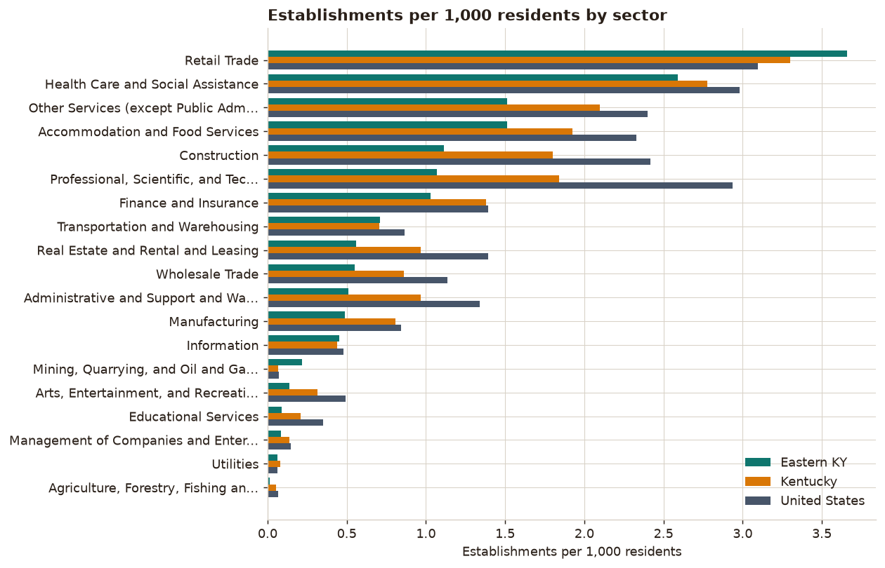
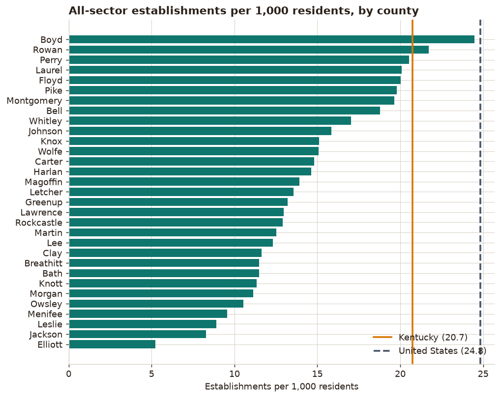
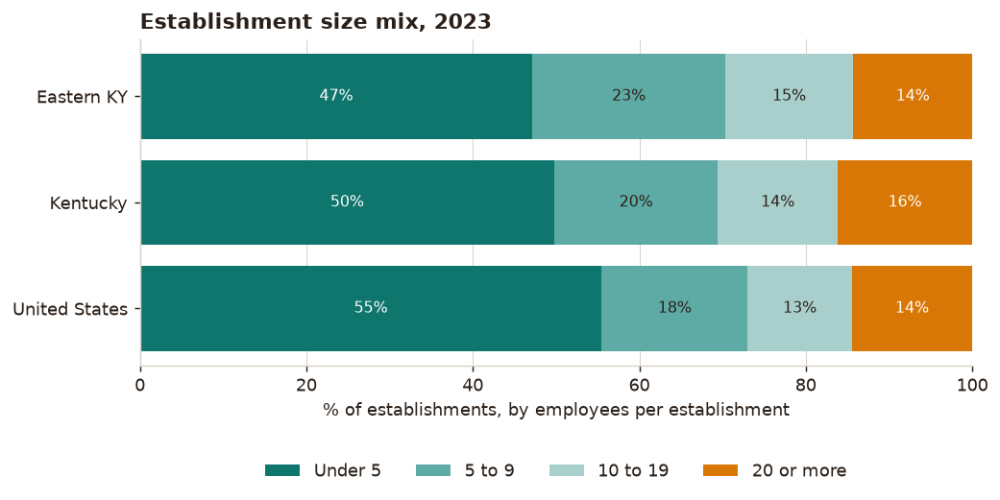
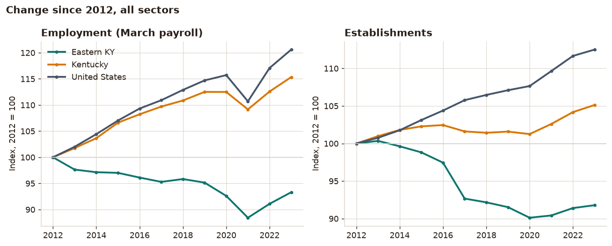
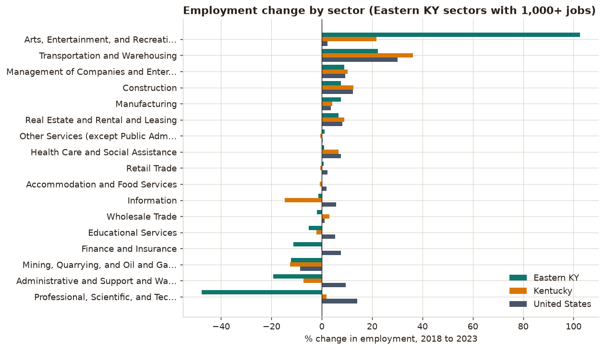
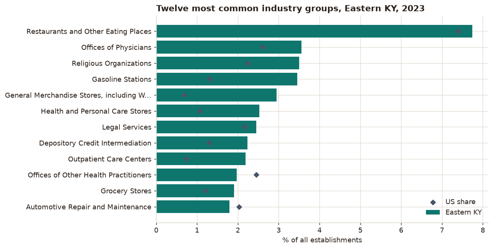
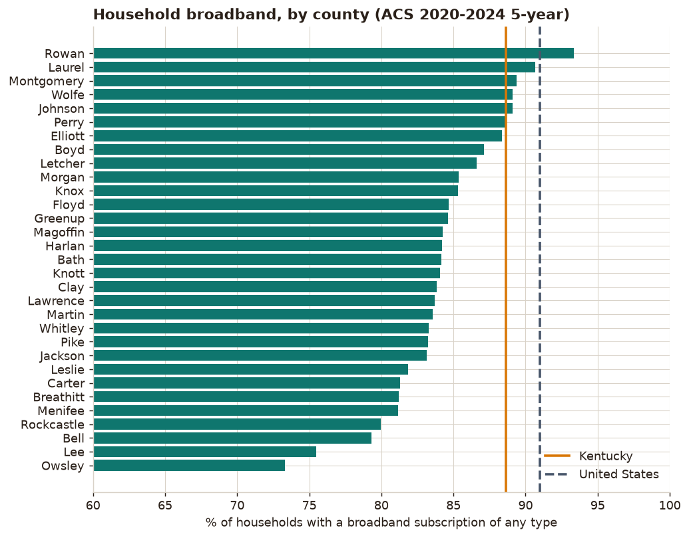
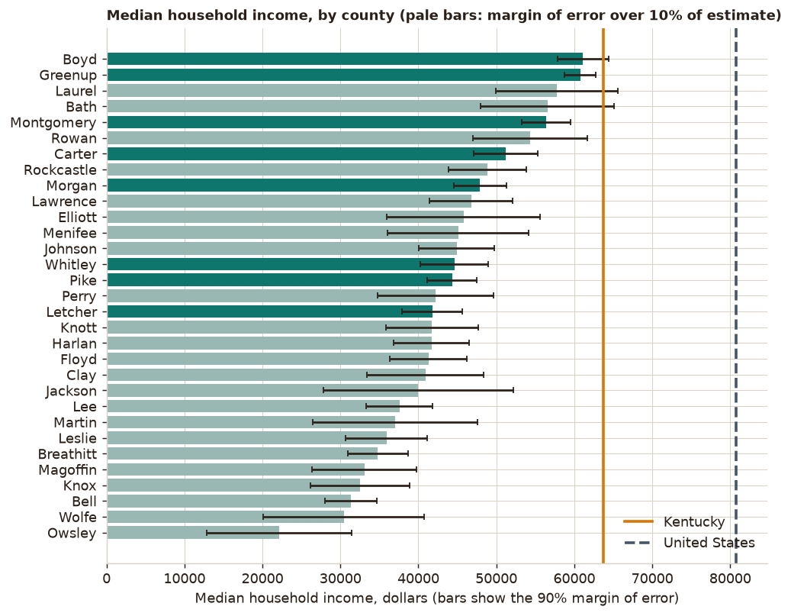
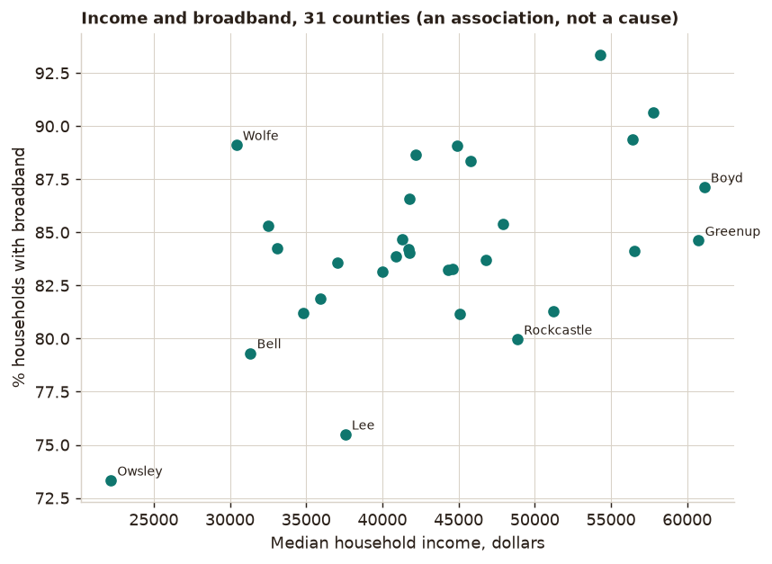

Small business in Eastern Kentucky counties
31 counties in five eastern Kentucky development districts, compared with Kentucky and the United States, using free public Census Bureau data.
Business figures are for 2023 (County Business Patterns). Internet and income figures are the ACS 2020-2024 5-year estimates. Population is the Census 2023 estimate (683,584 residents in the region). Code and data: github.com/chasebuilds/small-business-county-study.
Findings in plain English
- Fewer businesses per person. The region has 16.6 establishments per 1,000 residents. That is 80% of Kentucky's rate and 67% of the US rate. An establishment is one business location with paid employees.
- The gap is not even. Relative to Kentucky, the region has more establishments per resident in Mining, Quarrying, and Oil and Gas Extraction (0.22 vs 0.07 for Kentucky) and Retail Trade (3.66 vs 3.30 for Kentucky). It has the fewest, relative to Kentucky, in Agriculture, Forestry, Fishing and Hunting (0.01 vs 0.05 for Kentucky), Arts, Entertainment, and Recreation (0.14 vs 0.32 for Kentucky), Educational Services (0.09 vs 0.21 for Kentucky).
- Jobs fell while Kentucky and the US grew. Payroll employment in the 31 counties went from 177,941 in 2012 to 166,040 in 2023, a change of -6.7%. Kentucky changed by 15.3% and the US by 20.6%. Establishment counts moved the same direction (-8.2% region, 5.1% Kentucky, 12.5% US).
- Most businesses are small, about like everywhere else. 85.7% of establishments in the region have fewer than 20 employees, against 83.8% in Kentucky and 85.5% in the US. The average establishment has 14.6 employees here, 18.1 in Kentucky.
- Most common types. The largest group is restaurants and other eating places (878 establishments, 7.7% of the total). Gasoline stations and general merchandise stores, including warehouse clubs and supercenters, take a larger share of establishments here than across the US (2.6 and 4.3 times the US share).
- Fewer households have broadband. 85.3% of households in the region report a broadband subscription of any type, against 88.6% in Kentucky and 91.0% in the US. 11.6% have no internet access at all. County rates run from 73.3% (Owsley) to 93.4% (Rowan).
- Lower incomes. The middle county has a median household income of $42,181, against $63,726 for Kentucky and $80,734 for the US. 23 of 31 county estimates have a margin of error over 10% of the estimate, so county rankings are rough.
- Income and broadband move together across counties (correlation 0.50 across 31 counties). This is an association in one cross-section. The data cannot say which causes which.
What this does not show: why the numbers differ, whether any single business is doing well, or anything about the self-employed and farms (County Business Patterns leaves them out). See Caveats.
Establishments per 1,000 residents
Counts come from County Business Patterns 2023. The region total is the plain sum of 31 counties divided by their combined population estimate.



Employment trends
Employment in County Business Patterns is the payroll count for the pay period that includes March 12. Both lines start at 100 in 2012.

By sector, 2018 to 2023
Sector employment is only compared from 2018, the first year where no county's value is withheld. Among sectors with at least 1,000 jobs in the region, the biggest increases were Arts, Entertainment, and Recreation (+103%), Transportation and Warehousing (+22%), Management of Companies and Enterprises (+9%), and the biggest decreases were Professional, Scientific, and Technical Services (-48%), Administrative and Support and Waste Management and Remediation Services (-19%), Mining, Quarrying, and Oil and Gas Extraction (-12%).

Most common business types
Ranked by establishment count across the 31 counties, using 4-digit industry groups. "Ratio to US share" divides the group's share of all establishments here by its share nationally. Above 1 means it makes up a bigger slice here, not that there are more of them per resident.

| Industry group (4-digit NAICS) | Establishments | % of Eastern KY | % of US | Ratio to US share |
|---|---|---|---|---|
| Restaurants and Other Eating Places | 878 | 7.7 | 7.4 | 1.05 |
| Offices of Physicians | 404 | 3.6 | 2.6 | 1.37 |
| Religious Organizations | 397 | 3.5 | 2.2 | 1.57 |
| Gasoline Stations | 392 | 3.5 | 1.3 | 2.65 |
| General Merchandise Stores, including Warehouse Clubs and Supercenters | 334 | 2.9 | 0.7 | 4.31 |
| Health and Personal Care Stores | 286 | 2.5 | 1.1 | 2.36 |
| Legal Services | 278 | 2.5 | 2.2 | 1.13 |
| Depository Credit Intermediation | 253 | 2.2 | 1.3 | 1.71 |
| Outpatient Care Centers | 248 | 2.2 | 0.7 | 2.95 |
| Offices of Other Health Practitioners | 224 | 2.0 | 2.4 | 0.81 |
| Grocery Stores | 216 | 1.9 | 1.2 | 1.59 |
| Automotive Repair and Maintenance | 203 | 1.8 | 2.0 | 0.88 |
Internet subscriptions
ACS 2020-2024 5-year estimates, table B28002. "Broadband of any type" includes cellular data plans, so a household with only a phone plan counts. 10.5% of households in the region rely on a cellular plan alone (13.0% in Kentucky). Region rates are household-weighted sums across the 31 counties.

Median household income


County table
| County | District | Broadband % | No internet % | Median income $ | Income margin of error $ |
|---|---|---|---|---|---|
| Bath | Gateway | 84.1 | 14.3 | 56,541 | 8,587 |
| Bell | Cumberland Valley | 79.3 | 17.3 | 31,354 | 3,340 |
| Boyd | FIVCO | 87.1 | 8.1 | 61,118 | 3,296 |
| Breathitt | Kentucky River | 81.2 | 16.7 | 34,808 | 3,824 |
| Carter | FIVCO | 81.3 | 11.0 | 51,235 | 4,124 |
| Clay | Cumberland Valley | 83.9 | 13.2 | 40,900 | 7,504 |
| Elliott | FIVCO | 88.4 | 10.9 | 45,776 | 9,791 |
| Floyd | Big Sandy | 84.7 | 12.7 | 41,279 | 4,939 |
| Greenup | FIVCO | 84.6 | 11.0 | 60,751 | 1,988 |
| Harlan | Cumberland Valley | 84.2 | 13.4 | 41,693 | 4,836 |
| Jackson | Cumberland Valley | 83.1 | 14.0 | 40,000 | 12,176 |
| Johnson | Big Sandy | 89.1 | 9.5 | 44,904 | 4,843 |
| Knott | Kentucky River | 84.1 | 14.2 | 41,761 | 5,899 |
| Knox | Cumberland Valley | 85.3 | 12.1 | 32,527 | 6,385 |
| Laurel | Cumberland Valley | 90.7 | 7.7 | 57,771 | 7,839 |
| Lawrence | FIVCO | 83.7 | 13.6 | 46,772 | 5,311 |
| Lee | Kentucky River | 75.5 | 21.6 | 37,568 | 4,248 |
| Leslie | Kentucky River | 81.9 | 15.5 | 35,934 | 5,237 |
| Letcher | Kentucky River | 86.6 | 11.4 | 41,793 | 3,868 |
| Magoffin | Big Sandy | 84.2 | 12.4 | 33,080 | 6,707 |
| Martin | Big Sandy | 83.6 | 11.5 | 37,042 | 10,562 |
| Menifee | Gateway | 81.2 | 15.1 | 45,096 | 9,071 |
| Montgomery | Gateway | 89.4 | 8.7 | 56,396 | 3,128 |
| Morgan | Gateway | 85.4 | 11.9 | 47,913 | 3,351 |
| Owsley | Kentucky River | 73.3 | 22.7 | 22,188 | 9,297 |
| Perry | Kentucky River | 88.7 | 8.1 | 42,181 | 7,458 |
| Pike | Big Sandy | 83.2 | 13.2 | 44,312 | 3,223 |
| Rockcastle | Cumberland Valley | 80.0 | 14.6 | 48,862 | 4,995 |
| Rowan | Gateway | 93.4 | 5.6 | 54,321 | 7,317 |
| Whitley | Cumberland Valley | 83.3 | 13.8 | 44,615 | 4,358 |
| Wolfe | Kentucky River | 89.1 | 7.8 | 30,417 | 10,309 |
Caveats and limits
Suppressed and noisy Census cells
County Business Patterns protects confidentiality in two ways. Older files (2012 to 2016) withhold employment for many county and sector cells and give only a size range. Newer files publish every cell but add random noise and flag it: G means under 2%, H means 2% to under 5%, J means 5% or more. This analysis treats withheld values as missing, never zero, and adds a regional total only when all 31 counties have a value. Establishment counts are not withheld.
| Year | % county-sector employment cells withheld | % flagged noise of 5% or more |
|---|---|---|
| 2012 | 46.5 | 0.0 |
| 2015 | 25.6 | 19.4 |
| 2017 | 7.5 | 29.4 |
| 2018 | 0.0 | 35.1 |
| 2023 | 0.0 | 32.5 |
Because of this, sector-level job changes start in 2018. All-sector employment is available for every year.
Other limits
- County Business Patterns counts establishments with paid employees. It excludes the self-employed with no payroll, most farms, railroads, private households and government. Many small businesses in rural counties are in those groups, so the figures understate them.
- Establishments are locations, not companies. A chain with 12 stores counts as 12.
- Per-resident rates use population estimates, not the number of people able to work or the number of customers who live outside the county.
- ACS figures are survey estimates averaged over five years (ACS 2020-2024 5-year) and carry margins of error. The region "income" is the median of the 31 county medians, which is not the same as the median across all households in the region.
- Industry codes changed from NAICS 2012 to 2017 to 2022. Sector comparisons across versions may include reclassification.
- "Eastern Kentucky" has no single official boundary. This study uses the five area development districts Big Sandy, Kentucky River, Cumberland Valley, FIVCO and Gateway (31 counties, listed in
data/counties.csv). A different definition would give different totals. - The Census Bureau's API now asks for a key, so this study reads the bulk files from www2.census.gov instead. It uses no API key.
- This is descriptive. It does not test why any gap exists.
Sources
All files are public and need no account or key. Raw files are downloaded to a local cache and checked against SHA-256 checksums stored in data/checksums.json.
- County Business Patterns, 2012 to 2023, county, state and national files: census.gov/programs-surveys/cbp (files under
https://www2.census.gov/programs-surveys/cbp/datasets/). - American Community Survey 2020-2024 5-year, table-based summary files B01003, B19013, B28002:
https://www2.census.gov/programs-surveys/acs/summary_file/2024/table-based-SF/. - Population Estimates, Vintage 2024, county totals:
https://www2.census.gov/programs-surveys/popest/datasets/2020-2024/counties/totals/co-est2024-alldata.csv. - CBP NAICS descriptions (NAICS 2017):
https://www2.census.gov/programs-surveys/cbp/technical-documentation/reference/naics-descriptions/naics2017.txt.
This product uses Census Bureau data but is not endorsed or certified by the Census Bureau.